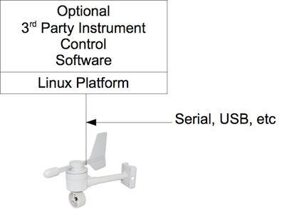
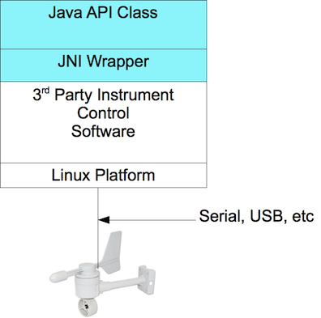

Adding javp Support for New Instruments
Contents
Introduction
Low-Level Instrument Control
Writing the Broker Adapter
Broker Configuration and Use
Introduction
This document describes how to add software support for a new instrument to
the javp software distribution.
Low-Level Instrument Control
The javp software is designed with layered abstractions to support rapid
integration of new hardware. Typically, a new piece of hardware will connect
to the platform via a serial or USB connection (see figure 1). There may or
may not be vendor-supplied, linux-friendly software to communicate with the
instrument.

Figure 1 - Typical Instrument Hardware/Software
The javp software requires that all hardware have a pure Java API. There are
several scenarios for satisfying this requirement:
- vendor-supplied java library - A third-party jar file or set of source files
is available for direct calling by javp. This is typically the preferred
scenario because the vendor library may be kept completely separate from javp
and upgraded without affecting javp, and vice-versa
- vendor-supplied non-java library - A more complicated scenario, the programmer
must wrap the vendor library with a Java Native Interface (JNI) wrapper (see
figure 2).

Figure 2 - Add Java Support if Needed
- vendor-supplied command-line tools - In this scenario, the programmer
must write a Java class that interacts with the linux shell to communicate
with the command-line tools as required
- custom instrument control code - In this scenario, the programmer writes
pure Java code to directly manipulate the instrument via it's native
communication channel, e.g. serial, USB or socket. Note that if the
instrument control software is to be included with the javp software
distribution, please add the new classes under
edu.unc.ims.instruments.
The pure Java API need not implement any interfaces or be derived
from any common classes. A user of the API should, however, be able to access
the new instrument for relevant configuration, startup, shutdown, reset, read data, etc.
Writing the Broker Adapter
Each instrument is represented by a single command-line application instance
called a Broker. All Brokers share a common set of features, e.g. for
processing configuration files, command-processing and other common functions.
The Broker source code is also shared among the instruments by employing the
Adapter Pattern.
BrokerAdapter is an abstract Java class that implements the BrokeredDevice
interface. Any new instrument, therefore, need only create a single Java class
that derives from the edu.unc.ims.avp.adapter.BrokerAdapter class.
TODO - describe in detail each BrokerAdapter method. In the meantime,
refer to the javadocs for details
Broker Configuration and Use
When the BrokerAdapter class is complete, you may
refer to the general instructions on configuration and use of a Broker.
Note that the configuration file directive adapter_class should
be set to your new class name.